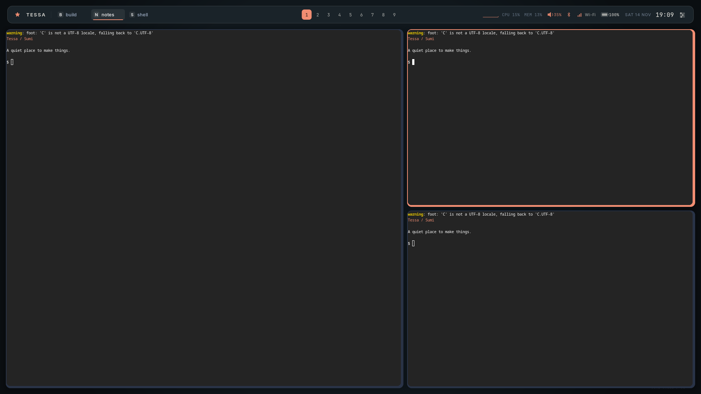
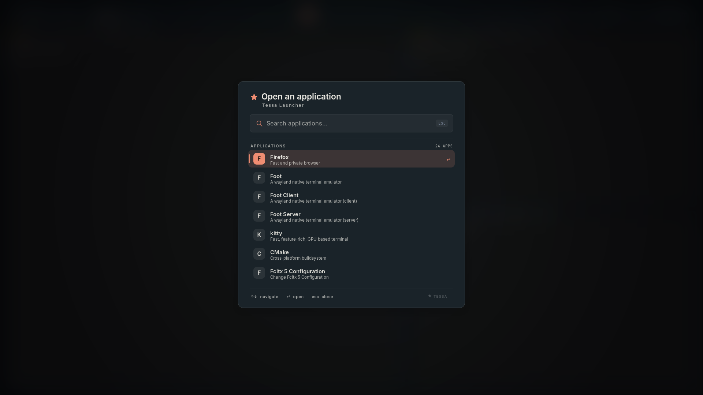
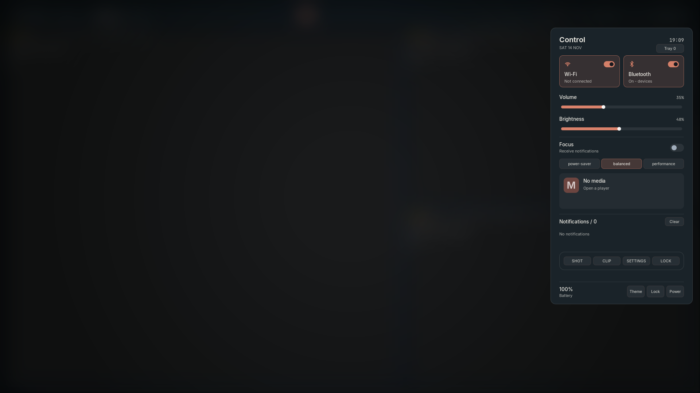
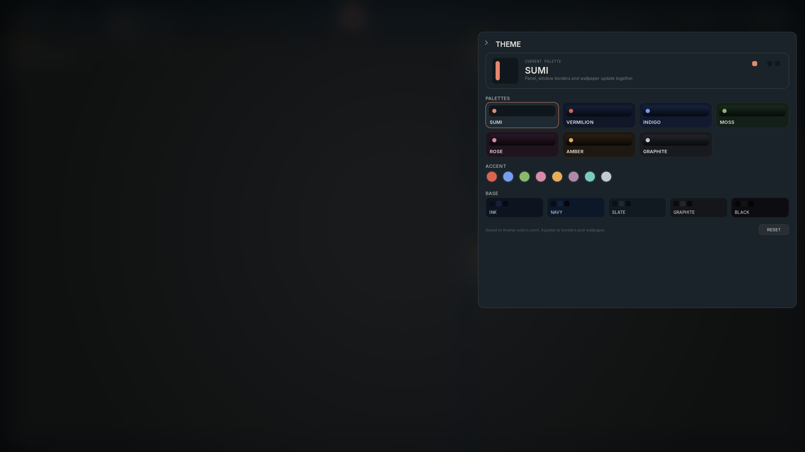
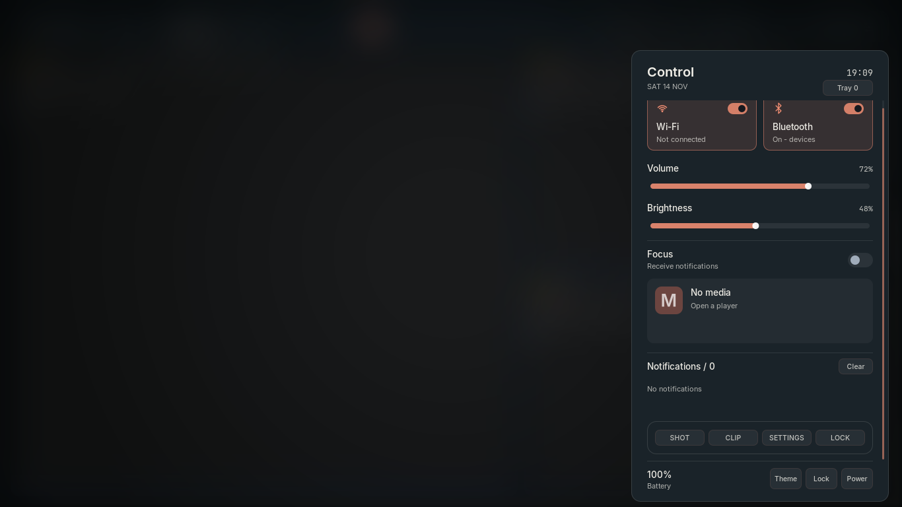
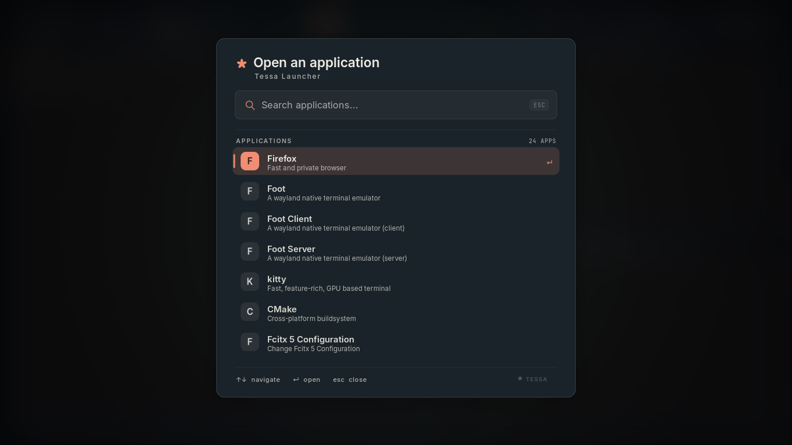

落ち着いた面、必要な情報、迷わない操作。採用したSumi案をパネルへ実装した、実際の描画結果です。
48pxのバーに情報を整理。墨色と珊瑚色を軸にしたSumiの基本画面。

中央配置のランチャー。検索とキーボードによる起動を確認。

右寄せのコントロールセンター。接続、音量、明るさなどをまとめた画面。

テーマ編集画面も、共通の配色と余白で統一。

1366×768。内容をスクロールしてもフッターの操作は同じ位置に。

1366×768でのランチャー描画。

指定のLinux機にSSH接続し、独立したテスト用セッションでビルド・配置テスト3件・操作テストを実施。1920×1080と1366×768で画面を確認しています。
Wi-Fi・Bluetooth・音声・明るさなどの操作は模擬サービスで検証しています。実機デバイスと物理キーボードのショートカットは未確認です。常用セッションへのインストールや切り替えは行っていません。
詳しい実装内容と既存設定への適用方法 →